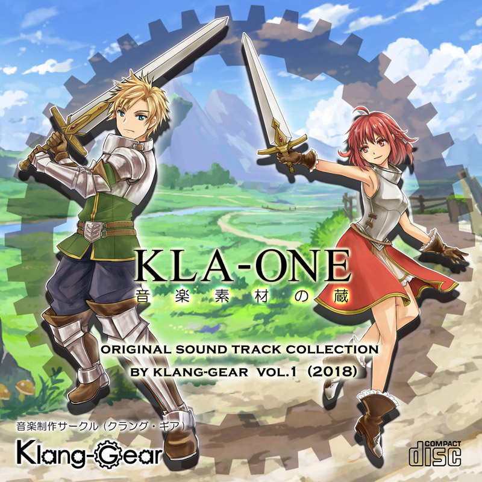
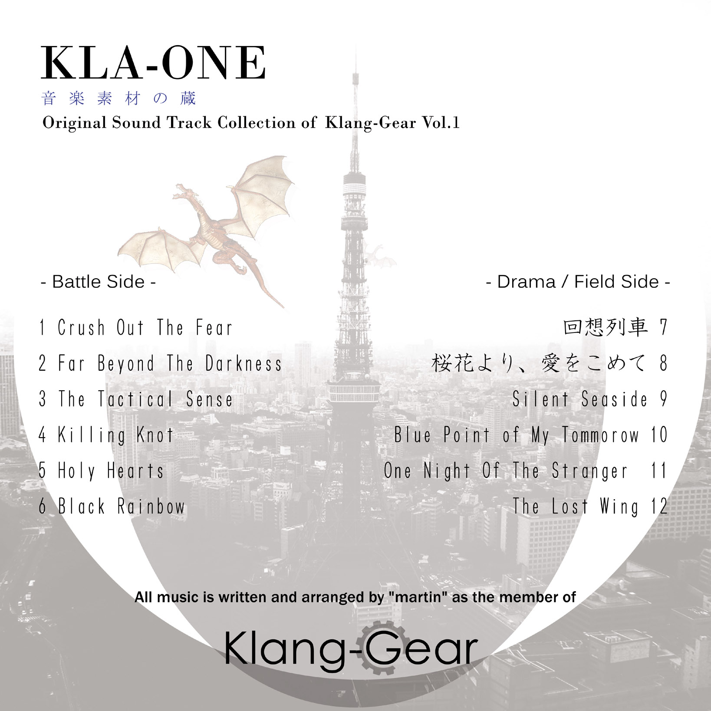

初出展のM3秋で出す予定のCDのツイッター用デモを作ってみました。 M3秋で出すCD「KLA-ONE -音楽素材の蔵-」のツイッター用デモ第2弾を公開しました。ゲームやら動画に使えそうな音楽素材としてCDを作ります！
2018年10月リリース
「KLA-ONE」
Klang-Gear 音楽素材の蔵 Vol.1
個性的で良質なバトル曲、フィールド曲素材を目指して。


Illustration by 鹿目悠人
彼女は地元のファンタジー好きな友人です。
2018年、M3秋に初出展をきっかけに約10年振りにCDを制作しました。
アマチュアゲームクリエイター、動画制作などの創作を盛り上げる
バラエティ豊かな12曲を収録しました。
特にRPGが好きなので、RPG音楽の花形であるバトルテーマ6曲と
イベントやフィールド音楽的なものを6曲という内容です。
芸歴（？）20年、ファミコン～SFC～プレステとゲームにはまり
ゲーム音楽を良く知る人間が創作する、気合の入った
ゲーム用BGMと想像して頂ければ良いかと思います！
音楽素材の蔵１→"KLA-ONE" → "クラワン"と呼んでいただければ。
*Battle side
1.Crush Out The Fear / ザコ戦ぽくも迫力あるバトル曲
2.Far Beyond The Darkness / スピード感ある激しいバトル曲
3.The Tactical Sense / とてもザコ戦ぽいバトル曲
4.Killing Knot / 圧力感あるバトル曲
5.Holy Hearts / テンションの上げ下げが少ないバトル曲
6.Black Rainbow / ボス感のある重たいバトル曲
*Drama, Field side
7.回想列車 / 切なくエスニックな回想っぽい曲
8.桜花より、愛をこめて / 切な優しいバラード曲
9.Silent Seaside / 海や静かな風景にぴったりの曲
10.Blue Point Of My Tomorrow / 青い空にぴったりなフィールド曲
11.One Night Of The Stranger / 近未来、現代的な情景に合うBGM
12.The Lost Wing / スケール大きいい感じのファンタジー曲
・2018/9/4 : URLを公開しました。
・2018/9/16 : Twitterに第一弾宣伝動画を公開(前半6曲)。
これまた飛行機で時間があったので幸い間に合いました（笑）
”KLA-ONE 音楽素材の蔵”
ゲームやら動画に使えそうな音楽素材としてCDを作ります！
こちらはバトルサイドと称した前半のバトル向けBGM
6曲のクロスフェードです。#M3秋 pic.twitter.com/AAeYghFr2y
・2018/9/23 : Twitterに第二弾宣伝動画を公開。(後半6曲)
第2弾はField/Drama Sideと称した後半トラックのクロスフェードです。#M3秋 https://t.co/j6IifaVryl pic.twitter.com/4Ms9I8UWOg
・2018/9/25 : ジャケットを公開しました。